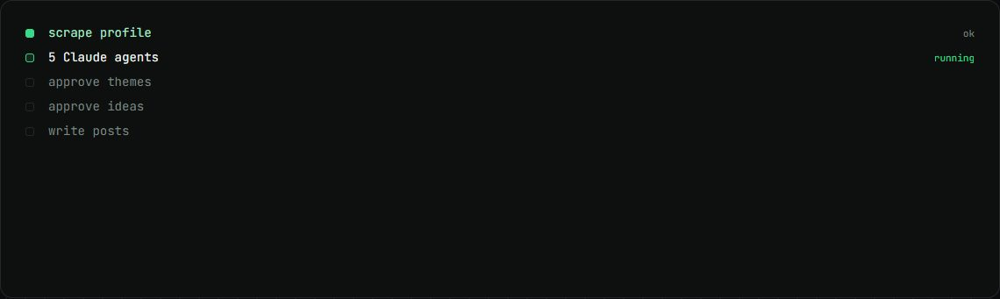
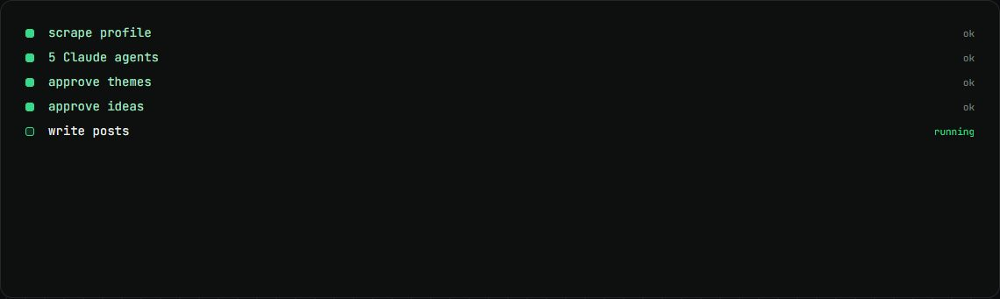

LinkedIn strategy pipeline
The n8n pipeline that turns one intake form into a client's LinkedIn strategy pack.
my role Maintained and extended it, then replaced it with Content Studio for daily work.
The problem
Each new founder client needed an audit, a tone of voice guide, a strategy and a content calendar before any posts could be written.
How it works
- An intake form starts an Apify scrape of the profile, with two fallbacks.
- Five Claude agents write the audit, revamp, tone of voice, strategy and calendar.
- A person approves themes, then ideas, then posts; each phase is started by a webhook.
- Captions and the final pack are written into a Google Doc.
What changed
- 183nodes in the workflow
- $0.14AI cost per client
- 19 minfor a full first phase
What I built
- Fixes and guards across the 183-node workflow.
- Measured cost per client and run time.
- The lessons that shaped Content Studio.
Stack
- n8n
- Claude
- Apify
- Google Docs
- Google Sheets
Stills

